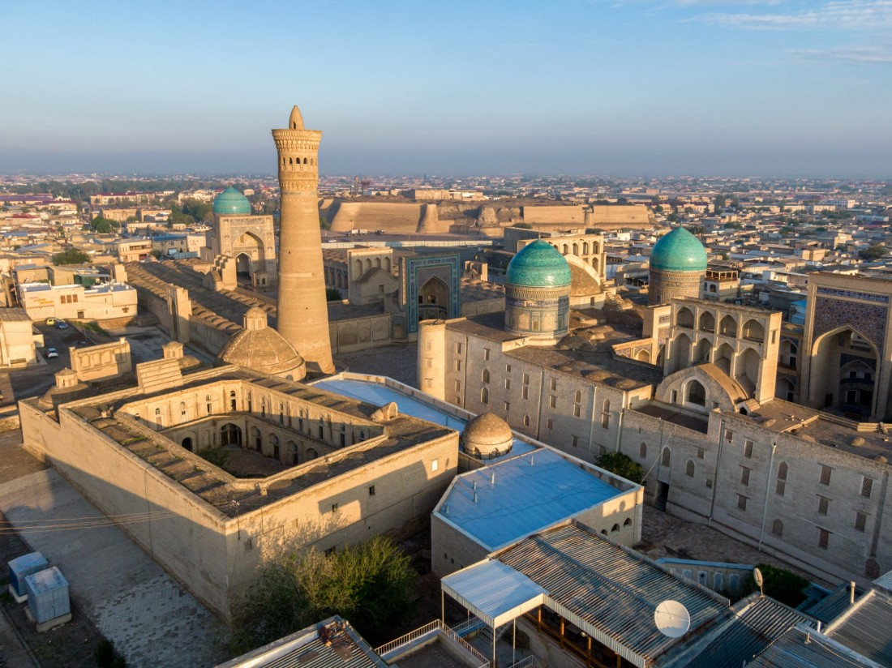
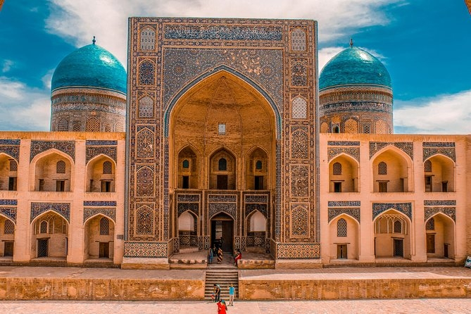

Welcome to Buxoro

Buxoro viloyati — Oʻzbekiston Respublikasining 12 viloyatlaridan biri. Oʻzbekiston viloyatlari ichida chegarasining kattaligi boʻyicha Navoiy viloyatidan keyin ikkinchi oʻrinda turadi. 1938-yil 15-yanvarda tashkil etilgan. Buxoro viloyati hududi asosan Qizilqum choʻlida joylashgan. Janubi-sharqini Zarafshon vodiysi egallagan. Shimoli-gʻarbda Xorazm viloyati va Qoraqalpogʻiston Respublikasi, shimol va sharqdan Navoiy viloyati, janubi-sharqda Qashqadaryo viloyati, janubi-gʻarbda Turkmaniston bilan chegaradosh. Maydoni 39,4 ming km2. Aholisi 2.000.255 kishi[1] (2022). Buxoro viloyati tarkibida 11 ta tuman (Buxoro, Vobkent, Jondor, Kogon, Olot, Peshkoʻ, Romitan, Shofirkon, Qorovulbozor, Qorakoʻl, Gʻijduvon), 11 ta shahar (Buxoro, Kogon, Galaosiyo, Vobkent, Gazli, Olot, Romitan, Shofirkon, Qorakoʻl, Qorovulbozor, Gʻijduvon), 3 ta shaharcha (Jondor, Zafarobod, Yangibozor), 121 ta qishloq bor. Buxoro viloyati aholisining etnik tarkibini asosan oʻzbeklar va ruslar, forslar (eroniylar), turkmanlar, tojiklar, ukrainlar, koreyslar, tatarlar va boshqalar tashkil etadi. Markazi — Buxoro shahri
Tarixi
Buxoro viloyati 1938-yil 15-yanvarda tashkil topgan. Yil oxiriga kelib uning tarkibiga Surxondaryo okrugi, Beshkent, Buxoro, Vobkent, Gʻijduvon, Gʻuzor, Dehqonobod, Kogon, Qamashi, Qorakoʻl, Qarshi, Koson, Konimex, Karmana, Qiziltepa, Kitob, Romitan, Sverdlov, Chiroqchi tumani, Shofirkon, Shahrisabz, Yakkabogʻ tumanlari va viloyatga qarashli Buxoro, Gʻijduvon, Kogon, Qarshi va Shahrisabz shaharlari qo'shilgan.
1941-yil 6-martda Surxondaryo okrugi Buxoro viloyati tarkibidan chiqarilib, Surxondaryo viloyatiga aylantirilgan.
1943-yil 20-yanvarda Beshkent, G‘uzor, Dehqonobod, Qamashi, Qarshi, Koson, Kitob, Chiroqchin, Shahrisabz, Yakkabog‘ viloyatlari hamda Qarshi va Shahrisabz shaharlari Buxorodan yangi Qashqadaryo viloyati tarkibiga o‘tkazilgan.
Aholisi
Oʻzbekistonning Buxoro viloyati aholisining 2021 yil uchun etnik tarkibi[3]:
Ro'yxatda hududda soni 500 kishidan oshgan millatlar keltirilgan
- o‘zbeklar - 1801896 yoki 92,54%
- tojiklar - 60898 yoki 3,13%
- ruscha - 24978 yoki 1,28%
- qozoqlar - 16510 yoki 0,85%
- turkman - 11633 yoki 0,60%
- tatarlar - 4905 yoki 0,25%
- lo'lilar - 3391 yoki 0,17%
- ukrainlar - 2585 yoki 0,13%

Bosh sahifaga qaytish